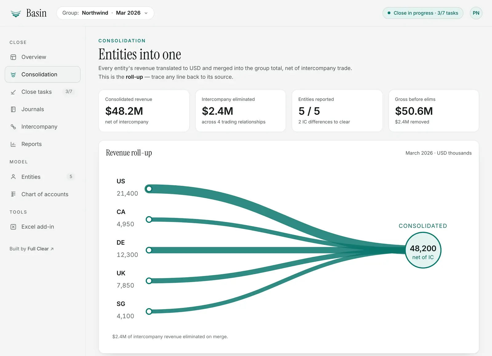

We consult on close platforms. So we built one.
Basin is a financial consolidation and month-end close platform we designed and built in-house — trial balance import, FX translation, intercompany eliminations, topside journals, consolidated statements, and a sign-off that locks the period. Sized for groups of about five entities, not five hundred.

For groups that aren't at OneStream scale yet.
OneStream is the platform we implement, and for enterprise finance teams it's the right one. But plenty of smaller groups — a holdco, a handful of trading entities, a few currencies — still consolidate in spreadsheets because they haven't reached that scale. Basin gives them a disciplined close in the meantime: the full lifecycle, sized to where they are today.
It's modeled on the same concepts OneStream uses — Entity, Account, Flow, Scenario, and Consolidation dimensions, transformation rules, a sign-off that locks the period — so a team that grows into OneStream already speaks the language.
It's also how we keep our consulting sharp. Every mechanism we configure in OneStream — FX translation, eliminations, ownership and minority interest, period locking, audit trails — we've had to build and test ourselves, from the engine up. There's no better way to understand how a close really works.
The whole close, one platform.
Everything from raw trial balances to a signed-off, locked period — with every consolidated figure traceable back to its source.
Consolidation engine
Translate, sum, eliminate, adjust — with full traceability on every consolidated account.
- FX translation of every entity at period-end rates
- Intercompany eliminations with a matched/unmatched workbench
- Ownership percentages with a non-controlling interest split
Statements & reporting
The three primary statements, consolidated and reconciled — not just a P&L export.
- Drill-down from any consolidated line to its per-entity sources
- Actual, budget, and prior-year columns with variance
- Indirect cash flow that reconciles exactly to the change in cash
Close workflow & controls
A close board that ends with a locked period, not a shared spreadsheet nobody trusts.
- Prepare → Consolidate → Review → Sign-off phases with owners and due dates
- Topside journals with a draft → post lifecycle and enforced double-entry
- CFO sign-off locks the period against every write, with an append-only audit trail
Data pipeline & governance
The platform layer a real finance system needs, built in from the start.
- Transformation rules driving an Import → Validate → Load pipeline
- Role-based access built around segregation of duties
- Scheduler, external connections, and an Excel add-in for reporting
What building Basin means for your project.
When we configure consolidation logic on your platform, it isn't the first time we've thought about how it should work — we've built the machinery ourselves.
1
Codebase covering the close from trial balance to signed-off period
3
Primary statements, every figure drilling down to its source
0
Black boxes — we wrote every calculation the engine runs
Want to see it running?
Click around the read-only demo yourself — no sign-up — or book a session and we'll walk the close end to end with you: consolidation, journals, sign-off, and what the same discipline looks like on your platform.